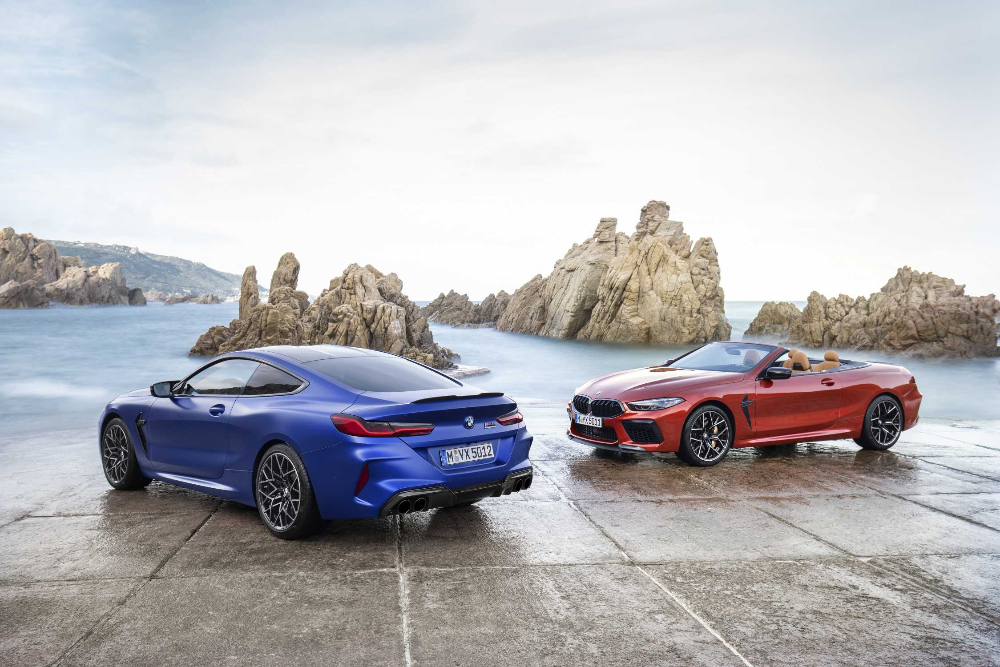
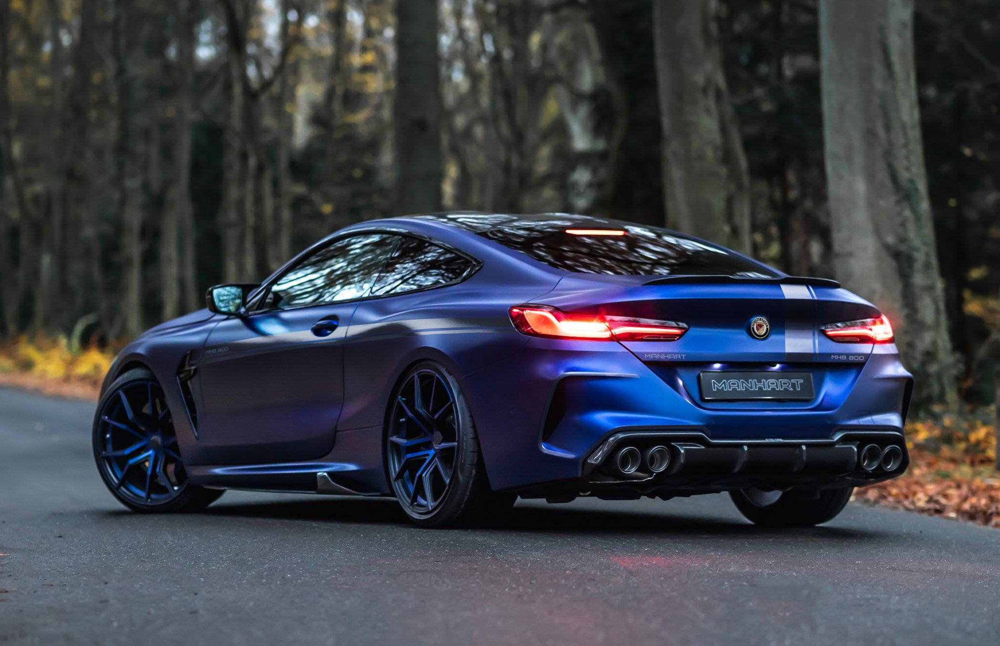
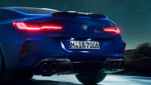
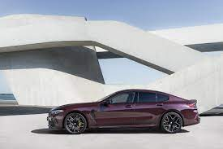
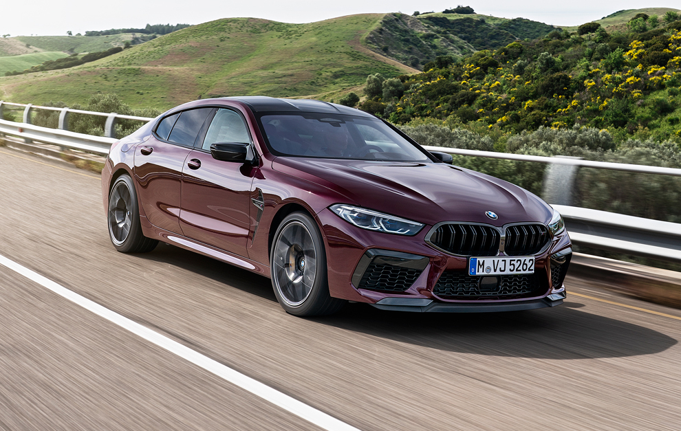

<section class="ftco-section ftco-car-details">
  <div class="container">
    <div class="row justify-content-center">
      <div class="col-md-12">
        <div class="car-details">
          <div class="text text-center">
            <h1 style="color: blue;background-color: whitesmoke; background-position: center;"><span class="subheading">BMW </span></h1>
            <h2 style="margin-top: auto; text-orientation: sideways ;color: royalblue;text-align:center;text-transform: capitalize;">M8 Coupé Competition</h2>
            
          </div>
        </div>
      </div>
    </div>
<br>
    <section style="margin-top: auto;"><h3 style="text-orientation: sideways ;color: royalblue;text-align:center;text-transform: capitalize;">Galeria de Imágenes</h3>
      <br>
      <br>
    </section>
    <div>
    <div id="carouselExampleDark" class="carousel carousel-dark slide" data-bs-ride="carousel">
      <div class="carousel-indicators">
        <button type="button" data-bs-target="#carouselExampleDark" data-bs-slide-to="0" class="active" aria-current="true" aria-label="Slide 1"></button>
        <button type="button" data-bs-target="#carouselExampleDark" data-bs-slide-to="1" aria-label="Slide 2"></button>
        <button type="button" data-bs-target="#carouselExampleDark" data-bs-slide-to="2" aria-label="Slide 3"></button>
      </div>
      <div class="carousel-inner">
        <div class="carousel-item active" data-bs-interval="10000">
          
          <div class="carousel-caption d-none d-md-block">
           <h5 style="color: whitesmoke;">AHORA CON ACABADO M SPORT DE SERIE</h5>
            <p style="color: whitesmoke;">Los modelos BMW Serie 8 Coupé BMW 840i/840i xDrive y BMW 840d xDrive disponen de serie del Paquete M Sport. Para un aspecto definido con equipamientos deportivos:
            <td style="text-align:justify;color: whitesmoke;box-sizing: initial;">
              <li>Paquete aerodinámico M.</li>
              <li>Llantas de aleación ligera M de 19 pulgadas y frenos M Sport de 18 pulgadas.</li>
              <li>Pinturas exclusivas y elementos de diseño M.</li>
              <li>Molduras de entrada M, reposapiés M para el conductor y pedales M.</li>
              <li>Volante M Sport de cuero con multifunción.</li>
              <li>Asientos multifunción para conductor y acompañante en cuero "Merino"</li></div>
            </div>
        <div class="carousel-item" data-bs-interval="2000">
          
          <div class="carousel-caption d-none d-md-block">
            <h5 style="color: whitesmoke;box-sizing: initial;">Parrilla BMW "Iconic Glow" </h5>
            <p style="color: whitesmoke;box-sizing: initial;">La parrilla BMW "Iconic Glow" destaca visualmente. Con su innovadora iluminación led en cascada, ofrece una excepcional puesta en escena luminosa, por ejemplo, al conducir o al abrir y cerrar el vehículo.</p>
          </div>
        </div>
        <div class="carousel-item">
          
          <div class="carousel-caption d-none d-md-block">
            <h5  style="color: whitesmoke;text-align: center;box-sizing: initial;">El nuevo BMW Serie 8 Coupé con M Sport combina el carácter deportivo con la elegancia exclusiva de la clase de lujo BMW. Explora por ti mismo:</h5>
            <td style="text-align:justify;color: whitesmoke;box-sizing: initial;">
            <li> Diseño emblemático con estética excepcional.</li>
              <li> Dinamismo deportivo y manejo de gran precisión.</li>
                <li>Equipamiento exclusivo y excepcionalmente cómodo.</li>
            </td>
            <div><br>
            <td style="text-align:justify;color: whitesmoke;box-sizing: initial;">
             <p>BMW M850i ​​xDrive Coupé:
              <li> Consumo de combustible en l/100 km (promedio): 10,5–10,8</li>
              <li> Emisiones de CO₂ en g/km (promedio): 239-245</li>
            </td>
          </div>
          </div>
        </div>
      </div>
      <button class="carousel-control-prev" type="button" data-bs-target="#carouselExampleDark" data-bs-slide="prev">
        <span class="carousel-control-prev-icon" aria-hidden="true"></span>
        <span class="visually-hidden">Previous</span>
      </button>
      <button class="carousel-control-next" type="button" data-bs-target="#carouselExampleDark" data-bs-slide="next">
        <span class="carousel-control-next-icon" aria-hidden="true"></span>
        <span class="visually-hidden">Next</span>
      </button>
    </div>
  </div>
</div>
<br>
<br>
<section>
  <div class="lightbox">
    <div class="row">
      <div class="col-lg-6">
        
        
      </div>
      <div class="col-lg-6">
        
      </div>
     </div>
  </div>
</section>
<section>
  <section style="margin-top: auto;"><h3 style="text-orientation: sideways ;color: royalblue;text-align:center;text-transform: capitalize;">Video</h3>
  <div style="text-align:center;" >
  <video  style="text-align: center;" width="auto" height="auto" autoplay >
  <source src="../../../assets/img/VIDEO_BMW.mp4" type="video/mp4"/>
  <source src="../../../assets/img/VIDEO_BMW (video-converter.com).webm" type="video/webm" />
  
  Su navegador no soporta este formato de video.
</video>
</div>
</section>
